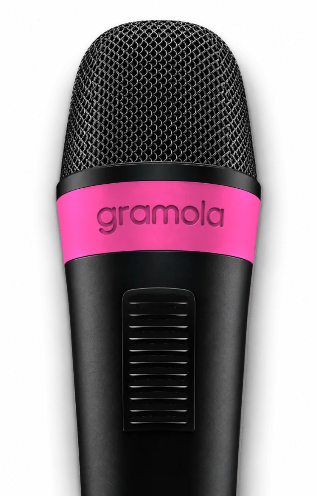

Formato historia (1080×1920). Canción y portada inventadas solo para la maqueta: en la app sale la carátula real. Jugadora «Laura», color J1.
A · PósterRojo Gramola, carátula grande y la puntuación enorme. El más directo y llamativo en historias.
B · EntradaComo el ticket de un concierto: carátula arriba, troquel y tus datos. Más elegante y con estadísticas.

C · MicroTu micro de color (el de la app) y la carátula de fondo difuminada. El más «tuyo».
D · MarcadorComo la pantalla de resultados de la tele: tu puesto frente a los demás y tus estadísticas.